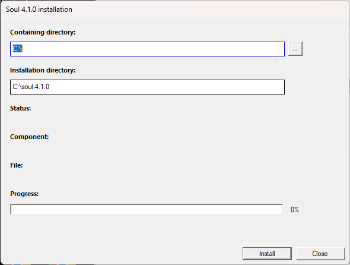
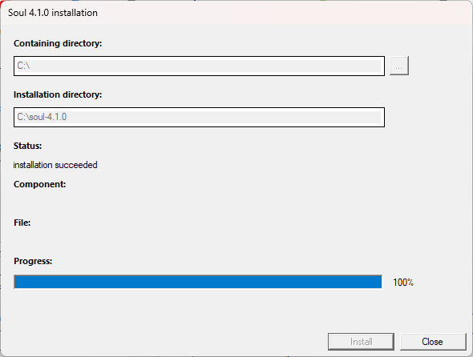
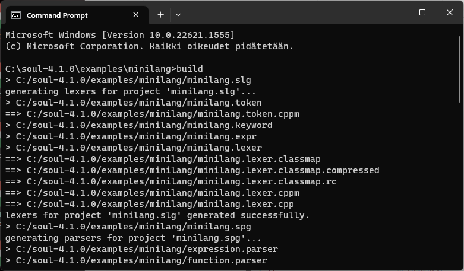

Installation with the setup program
To install with the setup program:
- Start the soul-4.1.0-win-x64-setup.exe executable and click the Install button

- The installer copies files, creates a SOUL_ROOT environment variable that points to the installation directory and adds the INSTALLATION_DIR\bin directory to the PATH.
- Click the Close button to close the installation program:

- Open the soul-mod\config\build.props file with a text editor.
- Change the value of the BOOST_INCLUDE_DIR and BOOST_LIB_DIR macros within the PropertyGroup Label="UserMacros" element
to contain the paths to your Boost include directory and Boost library directory.

- Open a command prompt to the soul-4.1.0\examples\minilang directory and run build.bat

- The bat runs slg and spg with the minilang project files.
- If the programs run and print:
'lexers for project 'minilang.slg' generated successfully.' and
'parsers for project 'minilang.spg' generated successfully.' everything works fine.